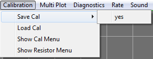
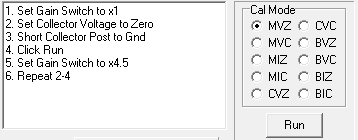
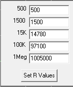

Save Cal: Clicking the yes
submenu saves calibration data to the file: "callut_n.dat" where n is
the serial number for the attached Mini_CT. The serial number is
programmed into Mini_CT along with the assembly code. The serial
number is used to allow more than one curve tracer to reside in a
laboratory. The serial number range is 1 to 127. Zero is reserved.
Load Cal: If a cal file is
present for the attached Mini_CT serial number, it is loaded.
Otherwise, the default calibration file "callut_0" is loaded.

Show Cal Menu: Brings up a
radio button selection menu and instructions on how to calibrate for
the selected item. Calibration should be performed in order. i.e. Top
left to bottom left, then top right to bottom right. Click the Run
button for each calibration step. After the all calibration is
completed, do a
Save Cal to update the calibration load file.
MVZ: Zero collector voltage measurement. Zero for both gain settings
MVC: Calibrate collector voltage measurement. Cal for both gain settings
MIZ: Zero collector current measurement. Zero for five series resistor settings
MIC: Calibrate collector current measurement. Cal for five series resistor settings
CVZ: Zero collector voltage Set.
CVC: Calibrate collector voltage Set.
BVZ: Zero base voltage Set.
BVC: Calibrate base voltage Set.
BIZ: Zero base current Set.
BIC: Calibrate base current Set.

Show Resistor Menu: Part of the
calibration process is to measure the series sense resistors. These
values are stored in the default calibration file. Should you want to
change them, enter the new value, click the
Set R Values button then
Save Cal the calibration file.
Main